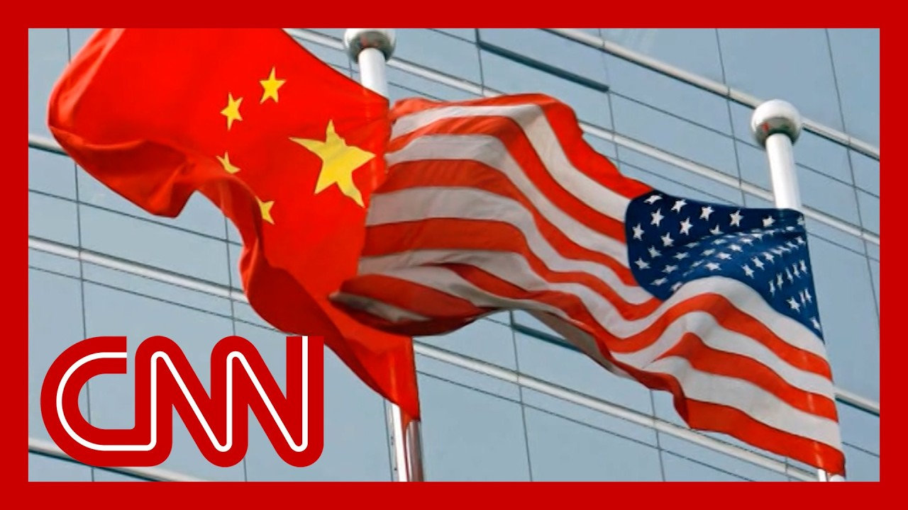

【美国高级官员结束中美贸易谈判，宣称达成“协议”】
Summary: High-level U.S.-China trade talks concluded in Switzerland with officials announcing "substantial progress" and confirming a deal, thanking Swiss hosts and praising Chinese negotiators for their diligence. The agreement aims to address the U.S. trade deficit and was reached through cooperation, with details to be released tomorrow.
摘要： 美中高层贸易谈判在瑞士结束，官员宣布“实质性进展”并确认达成协议，感谢瑞士主办方并赞扬中方谈判代表的勤奋。该协议旨在解决美国贸易逆差，通过合作达成，细节将于明日公布。

⏱️ Estimated Reading Time: 13 min
Just moments ago, a second day of high level trade talks between the U.S. and China wrapped up in Switzerland.
就在刚才，美中第二轮高层贸易谈判在瑞士结束。
The president's top trade negotiators emerged from the meeting in Geneva touting, quote, substantial progress and appearing to confirm that a deal between the two countries has been reached.
总统的首席贸易谈判代表在日内瓦会议结束后宣称取得“实质性进展”，并似乎确认两国已达成协议。
I'm happy to report that we made between the United States in the very important trade talks.
我很高兴报告我们在美中重要贸易谈判中取得进展。
First, I want to thank our Swiss hosts, the Swiss government, who have been very kind in providing us this wonderful venue.
首先，我要感谢瑞士主办方和瑞士政府慷慨提供这一绝佳场地。
And I think that led to a great deal of productivity.
我认为这极大提升了谈判效率。
We've seen, we will be giving details tomorrow.
我们已看到成果，明日将公布细节。
but I can tell you that the talks were productive.
但我可以说谈判富有成效。
We had the vice premier to advise ministers who were intricately involved.
我们有副总理为深入参与的部长们提供建议。
Ambassador Jamieson and myself and I spoke to President Trump, as did Ambassador Jamieson, last night, and he is fully informed of what is going on.
贾米森大使和我昨晚向特朗普总统汇报情况，他已全面了解进展。
So there will be a complete briefing tomorrow morning.
因此明早将举行完整简报会。
I'll turn it over to the ambassador.
现在请大使发言。
Thank you. Secretary.
谢谢部长。
I want to echo the Secretary's remarks in respect to the Swiss government.
我赞同部长对瑞士政府的评价。
they've been so welcoming.
他们非常热情。
and they posted this and everything has gone off flawlessly, and we appreciate that.
他们安排周到，一切顺利进行，我们深表感谢。
and again, to the Chinese negotiators, vice Premier.
再次感谢中方谈判代表、副总理。
Oh, Vice Minister and Vice Minister, will worked very diligently.
哦，还有副部长们，他们非常勤奋。
And these are very tough negotiators.
他们是强硬的谈判对手。
a couple of them I know from before and after interactions with them.
其中几位我此前打过交道。
And this was, as the secretary pointed out, a very constructive, two days.
正如部长所说，这是富有建设性的两天。
It's important to understand how quickly, we were able to come to an agreement which reflects that perhaps the differences were not so large as as may be thought.
需理解我们迅速达成协议，表明分歧或许没有想象中那么大。
that being said, there was a lot of groundwork that went into these two days.
尽管如此，这两天的谈判做了大量铺垫工作。
Just remember why we're here in the first place.
请记住我们最初的谈判目的。
The United States has a massive $1.2 trillion trade deficit.
美国存在1.2万亿美元的巨额贸易逆差。
So the president declared a national emergency and, imposed tariffs.
因此总统宣布国家紧急状态并加征关税。
And we're confident that the deal we struck with our Chinese partners will help us to resolve, work towards resolving that national emergency.
我们相信与中方达成的协议将有助于解决这一国家紧急状态。
I would just conclude by saying it was done in the spirit of cooperation, shared interest, mutual respect.
最后我想说，这是在合作、共同利益和相互尊重的精神下达成的。
And we look forward to sharing the details with you tomorrow morning.
我们期待明早与各位分享细节。
All right. CNN's Betsy Klein is joining us now from the White House.
好的，CNN的贝琪·克莱恩正在白宫连线。
A lot of optimism coming from those statements.
这些声明透露出高度乐观情绪。
That's exactly right, Fredricka.
完全正确，弗雷德里卡。
I mean, this has the potential to be a very significant development and one that could have massive implications for the global economy.
这可能是重大进展，对全球经济影响深远。
I just want to remind our viewers how we got here.
我想提醒观众谈判背景。
Just over a month ago, President Trump imposed the sweeping 145% tariffs on most Chinese goods.
一个多月前，特朗普总统对多数中国商品加征145%关税。
This really injected a significant amount of uncertainty into the global economy, and US-China trade relations have essentially been at a stalemate ever since.
这给全球经济带来巨大不确定性，美中贸易关系自此陷入僵局。
Now, moments ago, we heard from Treasury Secretary Scott Bessent and the United States Trade Representative, Jamieson Greer, who emerged from those two day talks with their Chinese counterparts in Switzerland, really touting significant progress that has been made.
刚才我们听到财政部长斯科特·贝森特和美国贸易代表贾米森·格里尔在瑞士与中方进行两天谈判后，盛赞取得的重大进展。
Greer characterizing it as a deal the White House also in an email saying that this is a deal should be considered a trade deal.
格里尔称之为协议，白宫邮件中也表示应视其为贸易协议。
The president yesterday had said after this first round of talks that there was a total reset with China and it is very clear that progress has been made.
总统昨日在首轮谈判后表示美中关系全面重置，进展显著。
But I want to underscore a couple of points that Greer made in that video you just showed.
但我想强调格里尔在视频中提到的几点。
He said it is important to understand the differences as may be thought.
他说需理解分歧或许没有想象中大。
He also said there was of ground work that went into these talks.
他还提到谈判做了大量铺垫工作。
And he said the we are confident the deal we struck with our Chinese partners will help resolve the national emergency that President Trump declared in April.
他表示相信与中方达成的协议将有助于解决特朗普总统四月宣布的国家紧急状态。
Now, Greer, even after these Trump administration officials spent the week really downplaying expectations ahead of these talks, they had characterized them as a positive first step, but said they really did not expect a final deal to be announced this weekend.
尽管特朗普政府官员本周一直淡化谈判预期，称这只是积极第一步，未料周末会宣布最终协议。
And Bessent, for his part, had suggested that this was really aimed at de-escalating those tensions with China.
贝森特则表示谈判旨在缓和对华紧张关系。
What we still don't know, Fredricka, is what both sides were able to agree to agree to as far as a tariff rate.
我们尚不清楚双方同意的关税税率。
Of course, we saw President Trump floating that 80% tariff rate.
当然，我们看到特朗普总统提出80%的关税税率。
And he told our colleague Kristen Holmes on Friday in the Oval Office that he was open to another number that he had told Bessent to negotiate with.
周五他在椭圆办公室告诉同事克里斯汀·霍姆斯，他接受其他数字并已指示贝森特协商。
He declined to share that number.
但他拒绝透露具体数字。
Now says more details will be shared on Monday morning.
他表示周一上午将公布更多细节。
Of course, markets, consumers, investors and businesses will be watching that quite closely.
市场、消费者、投资者和企业都将密切关注。
the president is set in moments, hours from now to depart on the first major foreign trip of his second term to the Middle East, clearly excited to head there with a win under his belt, potentially, Fredricka.
总统几小时后将开启第二任期首次重大外访前往中东，显然对可能带着谈判成果出访感到兴奋。
We're looking forward to more details.
我们期待更多细节。
Joining me right now to talk more about these developments is Kenneth Rogoff.
现在请肯尼斯·罗格夫加入讨论。
He is a professor of economics and the chair of international economics at Harvard University.
他是哈佛大学经济学教授兼国际经济学主任。
He's also a former director of the International Monetary Fund and the author of the new book, Our Dollar Your Problem.
曾任国际货币基金组织主任，著有新书《我们的美元，你们的问题》。
Professor, great to see you.
教授，很高兴见到您。
Thank you for having me.
感谢邀请。
So we don't know the details on this possible trade deal with China, but set the stage for what's at stake for the U.S. economy.
我们尚不清楚对华贸易协议细节，但请说明美国经济的利害关系。
With these trade talks ongoing with China.
当前美中贸易谈判持续进行。
We did, at least here are some optimism, coming from, our top U.S. representatives in Geneva.
至少我们在日内瓦的美国高层代表表现出乐观态度。
Well, I think, as you say, we just don't know the details.
如你所说，我们尚不了解细节。
Is this a reset? Is it a partial cease fire?
这是关系重置还是局部停火？
Normally, these kind of talks are so many issues.
通常此类谈判涉及诸多议题。
Take months. Years.
耗时数月甚至数年。
So we'll see what comes out of it.
因此需观察结果。
But a tremendous amount is at stake for the U.S. and the global economy.
但这对美国和全球经济关系重大。
first of all, our relationship with China is just incredibly important across so many dimensions.
首先，美中关系在多方面极其重要。
But also there's so much uncertainty.
但当前存在巨大不确定性。
we had 145% tariffs. Maybe there are 80% on terrorism.
我们曾实施145%关税，可能降至80%。
We sort of trade with China are has been halted.
与中国的贸易近乎停滞。
So if there was a deal and we actually believe both sides would keep to it, I think would also set the stage for making other deals and sort of ending this huge uncertainty we've had.
若达成协议且双方切实遵守，将为其他协议奠定基础，结束当前巨大不确定性。
But I, I wouldn't, you know, go dancing about it just yet.
但我认为现在庆祝为时过早。
Let's see what happened.
让我们静观其变。
if there were a deal or something particularly promising.
若达成协议或出现积极迹象。
Do you feel like that announcement would be made today ahead of the Asian markets opening?
您认为会在亚洲市场开盘前宣布吗？
And perhaps that would start to at least make an impact there?
或许至少会对市场产生影响？
Or does it tell you something that details will be revealed instead? as promised tomorrow.
或选择明日公布细节是否说明什么？
I think moving by tomorrow is already really fast.
我认为明日公布已属迅速。
there are so many things to discuss.
有诸多事项需讨论。
I don't know what comes in it.
我不清楚具体内容。
For example, respect for our intellectual property rights there, cyber spying on us all the time.
例如对中国尊重知识产权、停止网络间谍活动的要求。
And frankly, you know, closing up the trade deficit, which, the president portrays as a national emergency, is going to also mean a lot less lending into the United States, which is going to put upward pressure on our interest rates, which are already high.
坦白说，解决被总统称为国家紧急状态的贸易逆差，意味着减少对美贷款，这将推高本已高企的利率。
President Trump has suggested, you know, he may lower the tariff rates, for China, down to 80% from 145.
特朗普总统暗示可能将对华关税从145%降至80%。
I mean, you mentioned that, but but earlier today, the president's commerce secretary said the administration plans to keep a baseline tariff, for the rest of the countries, the U.S. trades with, take a listen to what was said.
您提到这点，但今早商务部长表示政府计划对其他国家维持基准关税。
So we do expect a 10% baseline tariff to be in place for the foreseeable future.
我们预计未来将维持10%的基准关税。
But don't buy the silly arguments that the U.S. consumer pays businesses.
别相信美国消费者承担关税的荒谬说法。
Their job is to try to sell to the American consumer, and domestically produced products are not going to have that tariff.
企业的职责是向美国消费者销售，国产商品不涉及关税。
So the foreigners. Who's going to.
因此外国企业...
Have to compete, they're going to have to compete.
必须参与竞争。
What happens is the businesses and the countries primarily eat the tariff.
实际上企业和出口国主要承担关税。
Should we buy that?
我们该相信吗？
No, I mean, that's just nonsense.
不，这纯属无稽之谈。
The consumers are mainly going to pay the tariff.
消费者将主要承担关税。
There are certain high end goods with big markups where the businesses may take some of it.
某些高溢价的高端商品可能由企业分担部分。
But the evidence is all that the American consumer is going to pay a lot.
但证据表明美国消费者将承担大部分。
It's going to put upward pressure on inflation.
这将加剧通胀压力。
But if they reach some certainty, that's going to be a big improvement.
但若能达成确定性，将是重大改进。
I'm skeptical that we're going to get there.
我怀疑能否实现。
You know, any time before the end of the summer.
在夏季结束前达成。
And I'm not sure we're going to get there then.
我甚至不确定届时能否达成。
Wow. Okay. Professor Ken Rogoff, great to see you.
哇，好的。肯·罗格夫教授，很高兴见到您。
Thank you so much for your expertise.
感谢您的专业见解。
Appreciate it.
非常感谢。